05. ประกอบ และถอด (Assembly / Dismantle)
วัตถุประสงค์การเรียนรู้
- ตั้ง Container เป็นพาเลท 4 ช่อง แล้วใช้ AssemblyStation เติมชิ้นงานขึ้นพาเลทได้
- เลือก Assembly Table (Fill-up Main MU / Predecessors) และ Assembly Mode (Attach MUs / Delete MUs) ให้ถูกกับงานได้
- ใช้ DismantleStation ถอดชิ้นงานออกจากพาเลท และจัดลำดับ Connector ขาเข้า/ขาออกได้ถูกต้อง
- ทำพาเลทวนกลับ แล้วใช้ ExperimentManager หาจำนวนพาเลทที่พอดีกับไลน์ได้
05_Assembly_Dismantle.spp — บันทึกจาก Plant Simulation 2606 (เปิดในเวอร์ชันเก่ากว่าไม่ได้)
· เปิดไฟล์แล้วดับเบิลคลิก Frame ใน Class Library › Models
บทก่อน ๆ ชิ้นงานเดินทางเดียวจาก Source ถึง Drain บทนี้ชิ้นงานต้องขึ้นพาเลท: AssemblyStation เติมชิ้นงานลงพาเลท DismantleStation ถอดออก แล้วพาเลทเปล่าต้องวนกลับมาใช้ใหม่ด้วยสายพาน 8 ขั้น จากพาเลทเปล่า ถึงคำถามว่า "ต้องใช้พาเลทกี่ใบ" — คำตอบคือ 6 ใบ ได้เต็ม 1,240 ชิ้น/ชม. (รถบน Track อยู่ในบท 06 · AGV อยู่ในบท 08)
05_Assembly_Dismantle.spp
(Class Library › Models › Model … Model6) · ทุกตัวเลขในบทนี้วัดจริงใน PtS 2606 ด้วยไฟล์นี้
ทุกสถานีใช้เวลา 0:10 เวลาจำลอง 1 ชั่วโมง
ภาพรวม: 8 ขั้น จากพาเลทเปล่า ถึงจำนวนพาเลทที่พอดี
| ขั้น | เรื่อง | ทำอะไร / ได้อะไร |
|---|---|---|
| 1 | Container = พาเลท | ที่วาง 2 × 2 × 1 = 4 ชิ้น |
| 2 | ลาก MU ไปวางบน Source | พาเลท และชิ้นงาน |
| 3 | AssemblyStation | เติมชิ้นงานจนพาเลทเต็ม ได้ 311 |
| 4 | Assembly Table | PartA 2 + PartB 2 |
| 5 | Delete MUs | ชิ้นงานกลายเป็น Product |
| 6 | DismantleStation | ถอดชิ้นงานออกจากพาเลท |
| 7 | พาเลทวนกลับ + Chart | พาเลท 1 ใบ ได้ 216 |
| 8 | ExperimentManager | ต้องใช้พาเลทกี่ใบ → 6 ใบ |
6 Frame ในไฟล์นี้ เล่าเรื่องเดียวกัน
| Frame | เนื้อหา | ขั้นที่ |
|---|---|---|
| Model | พาเลท + ชิ้นงาน → AssemblyStation ได้ 311 พาเลท/ชม. | 1–3 |
| Model2 · Model3 | PartA + PartB ได้ 341 · Delete MUs ได้ Product 311 | 4–5 |
| Model4 | + DismantleStation ถอดชิ้นงาน 1,240 ชิ้น/ชม. | 6 |
| Model5 | พาเลทวนกลับ 1 ใบ ได้ 216 ชิ้น/ชม. | 7 |
| Model6 | ExperimentManager 1–8 ใบ: 6 ใบได้ 1,240 | 8 |
Duplicate ใน Class Library ของที่วางไว้แล้วไม่ต้องวางใหม่ขั้นที่ 1: Container คือพาเลท — ตั้งที่วาง 4 ช่อง
Class Library › MUs › ดับเบิลคลิก Container
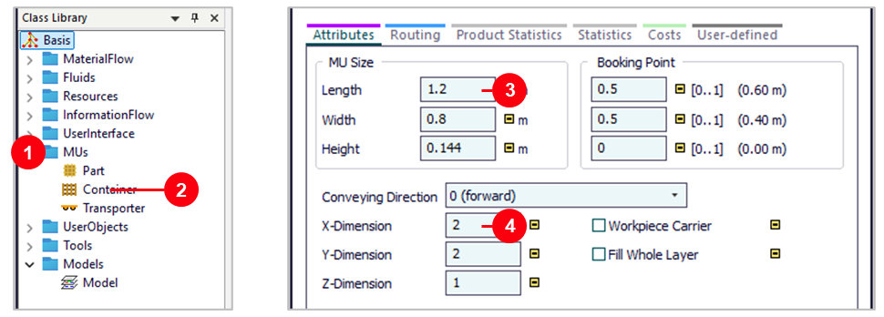
- 1
MUs— คลิกลูกศรเปิดโฟลเดอร์ - 2
Container— ดับเบิลคลิก (Part = ชิ้นงาน, Container = พาเลท) - 3ขนาด 1.2 × 0.8 m — ค่าเริ่มต้น
- 4
X-Dimension2 ·Y-Dimension2 ·Z-Dimension1 = วางชิ้นงานได้ 4 ชิ้น
Open in 3D เห็นพาเลท · ชิ้นงาน Part ยาว 0.5 m วาง 2 × 2 พอดีพาเลท
(แก้ที่ .MUs.Container โดยตรง ทุก Frame ในไฟล์นี้จึงใช้พาเลท 4 ช่องเหมือนกัน)ขั้นที่ 2: ลาก Container และ Part ไปวางบน Source
Frame Model · ลากจาก Class Library ไปปล่อยบน Source (ไลน์ในบทนี้วาง Source, Conveyor, AssemblyStation, Drain และ Connector ไว้แล้ว)
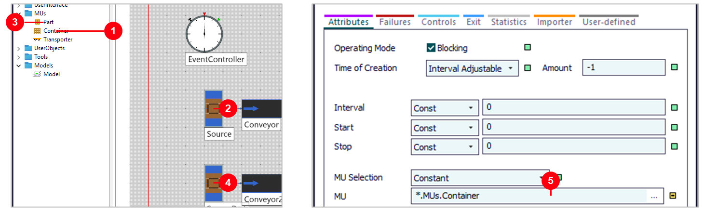
- 1
Container— กดค้างที่ Class Library - 2ปล่อยบน
Source— Source ปล่อยพาเลท - 3
Part— ลากแบบเดียวกัน - 4ปล่อยบน
SourcePart— Source ปล่อยชิ้นงาน - 5ดับเบิลคลิก Source — ช่อง
MU=.MUs.Container
ขั้นที่ 3: AssemblyStation — เติมชิ้นงานจนพาเลทเต็ม
ดับเบิลคลิก AssemblyStation (ซ้าย) · ลำดับ Connector (ขวา)
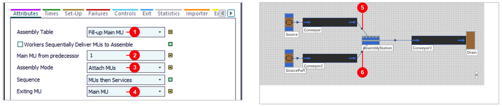
- 1
Assembly Table= Fill-up Main MU — เติมจนพาเลทเต็ม 4 ช่อง - 2
Main MU from predecessor= 1 — พาเลทมาจากเส้นที่ต่อเข้าเป็นเส้นแรก - 3
Assembly Mode= Attach MUs — ชิ้นงานติดไปกับพาเลท - 4
Exiting MU= Main MU — พาเลทออกไป - 5Connector เส้นแรก — จาก
Conveyor(พาเลท) = predecessor 1 - 6Connector เส้นที่สอง — จาก
Conveyor2(ชิ้นงาน) = predecessor 2
Conveyor 1> —▷— >1 AssemblyStation
เลขหลัง > คือ predecessor ถ้าต่อเส้นชิ้นงานก่อน ชิ้นงานจะเป็น Main MU แทนพาเลท (ดูปัญหาที่พบบ่อย)ผล Model — พาเลทละ 4 ชิ้น
Frame Model หลังรัน 1 ชั่วโมง (ซ้าย) · 3D บน Conveyor3 (ขวา)
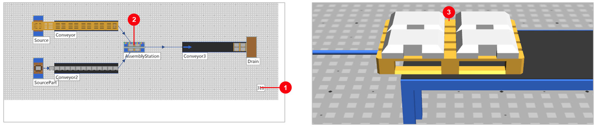
- 1
Drain= 311 — พาเลทที่ประกอบเสร็จใน 1 ชั่วโมง - 2
AssemblyStation— ทำงาน 86.8% · รอ 13.2% (รอชิ้นงานเลื่อนมาทีละชิ้น) - 3พาเลท 1 ใบ = ชิ้นงาน 4 ชิ้น — ใช้ชิ้นงาน 1,265 ชิ้น
ขั้นที่ 4: Model2 — ชิ้นงาน 2 แบบ PartA และ PartB
คลิกขวา Model › Duplicate → Model2 แล้วเพิ่ม Source และ Conveyor อีกเส้น · Class Library › UserObjects
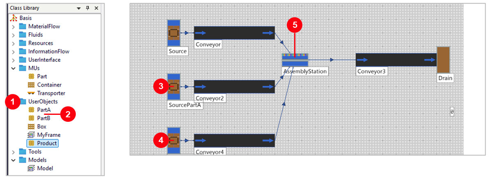
- 1
UserObjects— โมเดลใหม่ของ 2606 มี PartA และ PartB ให้แล้ว - 2
PartA·PartB— ลากไปวางบน Source แบบขั้นที่ 2 - 3
SourcePartA— predecessor 2 - 4
SourcePartB+Conveyor4— ต่อเข้า AssemblyStation เป็นเส้นที่สาม = predecessor 3 - 5
AssemblyStation— ตั้งตารางในภาพถัดไป
Assembly Table = Predecessors
AssemblyStation ของ Model2 · ปุ่ม Open (ขวา)
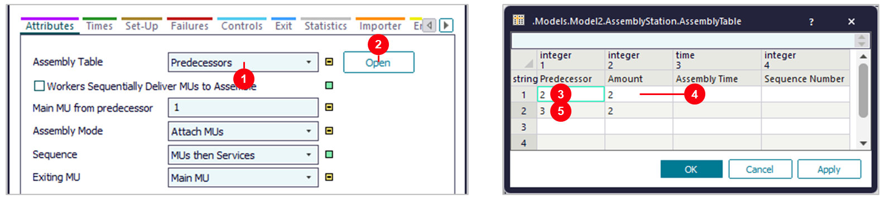
- 1
Assembly Table= Predecessors — กำหนดเองว่าเอาจากเส้นไหนกี่ชิ้น - 2
Open— เปิดตาราง - 3Predecessor 2 — PartA
- 4Amount 2 — ต่อพาเลท 1 ใบ
- 5Predecessor 3 — PartB 2 ชิ้น
ขั้นที่ 5: Model3 — ประกอบแล้วได้สินค้าใหม่ (Delete MUs)
คลิกขวา Part › Duplicate = Product (ซ้าย) · AssemblyStation ของ Model3 (ขวา)
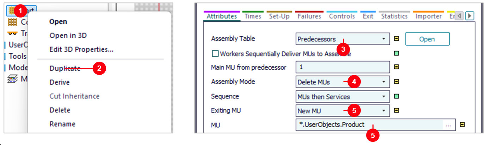
- 1คลิกขวา
Part— ใน MUs - 2
Duplicate— ได้ Part ใน UserObjects เปลี่ยนชื่อเป็นProduct - 3
Predecessors: 2 → 4 ชิ้น — Fill-up ใช้ไม่ได้ เพราะชิ้นงานถูกลบ พาเลทไม่เคยเต็ม - 4
Assembly Mode= Delete MUs — ลบชิ้นงานที่ประกอบ - 5
Exiting MU= New MU ·MU= Product — ลาก Product ไปปล่อยที่ช่อง MU
ขั้นที่ 6: Model4 — DismantleStation ถอดชิ้นงานออกจากพาเลท
Duplicate Model → Model4 · ดับเบิลคลิก DismantleStation
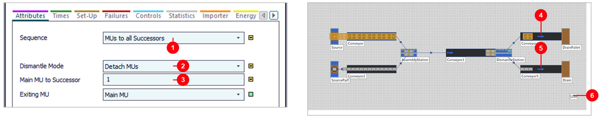
- 1
Sequence= MUs to all Successors — ส่งออกทุกทาง - 2
Dismantle Mode= Detach MUs — ถอดชิ้นงานออก - 3
Main MU to Successor= 1 — พาเลทไปทางที่ต่อเป็นเส้นแรก - 4
Conveyor4= successor 1 — พาเลทเปล่า → DrainPallet 310 ใบ - 5
Conveyor5= successor 2 — ชิ้นงาน → Drain - 61,240 ชิ้น = 310 × 4 ใน 1 ชั่วโมง
ขั้นที่ 7: Model5 — พาเลทวนกลับ ใช้พาเลทใบเดียว
Duplicate Model4 → Model5 · Source › Amount = 1 · EventController › Settings › End = 1:00:00
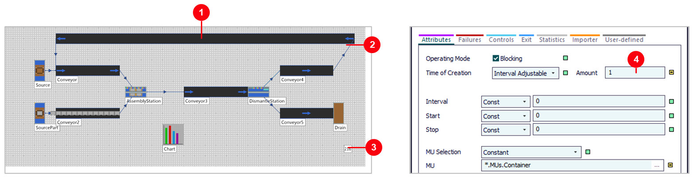
- 1
ConveyorReturn— สายพานพาเลทเปล่ากลับไปต้นไลน์ (แทน DrainPallet) - 2
Conveyor4→ConveyorReturn→Conveyor— พาเลทวนเป็นวง - 3
Drain= 216 ชิ้น — ใน 1 ชั่วโมง - 4
Amount= 1 — Source ปล่อยพาเลทแค่ใบเดียว
Chart — ลากสองสถานีไปวางบน Chart
Toolbox › User Interface › Chart · ลาก AssemblyStation แล้ว DismantleStation ไปปล่อยบน Chart
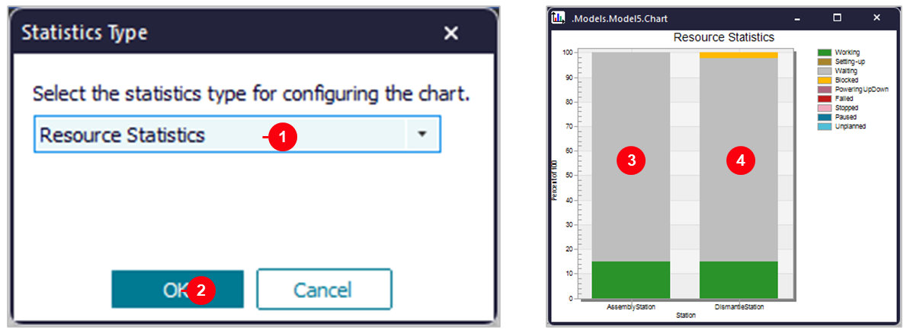
- 1ปล่อย AssemblyStation บน Chart — ขึ้นหน้าต่าง
Statistics Type= Resource Statistics - 2
OK— แล้วลาก DismantleStation ไปปล่อยอีกตัว - 3
AssemblyStation— ทำงาน 15% เทา = รอพาเลท 85% - 4
DismantleStation— ทำงาน 15% เหลือง = Blocked 2.3%
ขั้นที่ 8: Model6 — ExperimentManager: ต้องใช้พาเลทกี่ใบ
Duplicate Model5 → Model6 · Toolbox › Tools › ExperimentManager
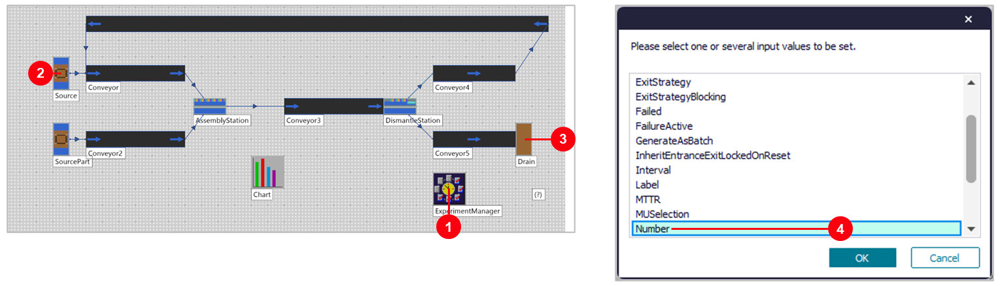
- 1
ExperimentManager— วางข้างไลน์ - 2Shift + ลาก
Sourceไปปล่อยบน ExperimentManager = ค่าที่จะเปลี่ยน (Input) - 3ลาก
Drainไปปล่อย = ผลที่อยากรู้ (Output) เลือกStatNumIn - 4
Number— จำนวนพาเลทที่ Source ปล่อย (ช่อง Amount) กด N แล้ว OK
ทดลอง 1–8 ใบ แล้วอ่านผล
- 1
Define Output Values—root.Drain.StatNumIn - 2
Define Input Values—root.Source.Number - 3
Define Experiments— ใส่ 1 ถึง 8 - 4
Observations3 — รันซ้ำการทดลองละ 3 รอบ - 5
Start— แล้วแท็บEvaluation › Results
สรุป 6 Frame (PtS 2606)
| Frame | ตั้งค่า | ผลใน 1 ชม. | อ่านว่า |
|---|---|---|---|
| Model | พาเลท + ชิ้นงาน → AssemblyStation (Fill-up) | 311 พาเลท | พาเลทละ 4 ชิ้น |
| Model2 | Assembly Table: PartA 2 + PartB 2 | 341 พาเลท | ชิ้นงานมา 2 เส้น |
| Model3 | Delete MUs → New MU = Product | 311 Product | พาเลทหายไป |
| Model4 | + DismantleStation (Detach MUs) | 1,240 ชิ้น | พาเลทเปล่า 310 ใบ |
| Model5 | พาเลทวนกลับด้วยสายพาน 1 ใบ | 216 ชิ้น | สถานีรอพาเลท 85% |
| Model6 | ExperimentManager พาเลท 1–8 ใบ | 6 ใบ = 1,240 | เกิน 6 ไม่เพิ่ม |
ทุกตัวเลขวัดจริงด้วยไฟล์นี้ใน PtS 2606 · ทุกสถานีใช้เวลา 0:10 · เวลาจำลอง 1 ชั่วโมง — เรื่องของบทนี้: พาเลทต้องวนกลับมาใช้ใหม่ จำนวนพาเลทกำหนดผลผลิตของทั้งไลน์
ลองเอง: เปลี่ยนค่าแล้วรัน 1 ชั่วโมง
| Frame | ลองเปลี่ยน | ผล | ทำไม |
|---|---|---|---|
| Model | AssemblyStation Processing Time 5 วินาที | 551 พาเลท | ประกอบเร็วขึ้น |
| Model | Processing Time 20 วินาที | 166 พาเลท | ช้าลงครึ่งหนึ่ง |
| Model5 | Source Amount = 2 พาเลท | 432 ชิ้น | พาเลท 2 ใบ ได้ 2 เท่า |
| Model5 | Source Amount = 5 พาเลท | 1,076 ชิ้น | ใกล้เต็มแล้ว |
| Model5 | Source Amount = 6 พาเลท | 1,240 ชิ้น | เท่า Model4 ที่พาเลทไม่จำกัด |
ปัญหาที่พบบ่อย และวิธีแก้
| อาการ | วิธีแก้ |
|---|---|
| Drain ได้ชิ้นงานเปล่า 358 ชิ้น พาเลทค้าง | ต่อ Connector เส้นชิ้นงานก่อน ชิ้นงานจึงเป็น Main MU → ลบ Connector ขาเข้าแล้วต่อเส้นพาเลทก่อน |
| พาเลทไปทางชิ้นงานหลัง DismantleStation | ต่อ Connector ขาออกเส้นพาเลท (Conveyor4) ก่อน = successor 1 |
| Delete MUs แล้วพาเลทไม่ออก | Fill-up Main MU ใช้กับ Delete MUs ไม่ได้ ใช้ Predecessors กำหนดจำนวนชิ้น |
| ลาก MU ไปปล่อยแล้ว Source ย้ายที่ | ปล่อยไม่ตรงไอคอน → ปล่อยกลางไอคอน Source |
| Shift + ลาก ได้รายการ Output | กด Shift ค้างไว้จนปล่อยเมาส์ |